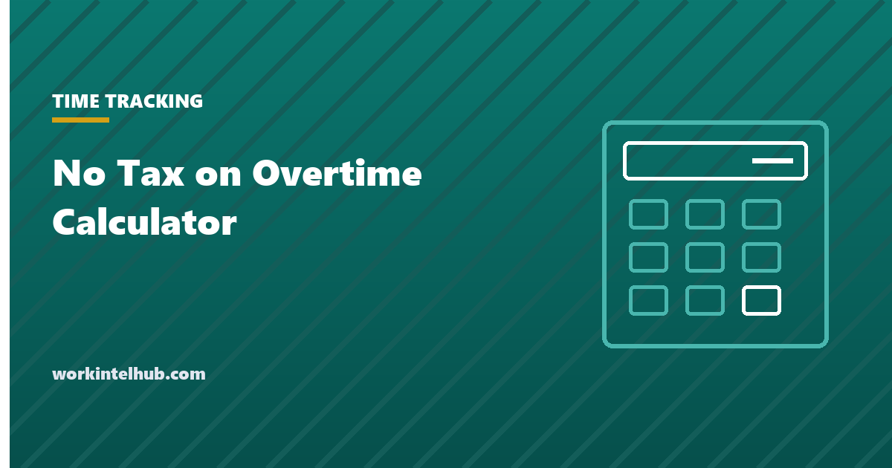

No Tax on Overtime Calculator

"No tax on overtime" is a federal income tax deduction for tax years 2025 through 2028. It lets employees who earn overtime under the Fair Labor Standards Act deduct the premium portion of that pay, the extra half in time and a half, up to $12,500 a year, or $25,000 on a joint return, subject to an income phaseout.
The name overstates it in three ways: only the premium qualifies, not the whole overtime cheque; Social Security and Medicare are still taken out; and most states still tax it. The calculator gives the real number, and the sections after it cover who qualifies, what the employer has to report, and the situations where the deduction is smaller than people expect.
Calculate your deduction
Federal income tax only. Social Security and Medicare are still withheld on all overtime, and most states have not adopted the deduction. The hours mode assumes overtime paid at time and a half under the FLSA; only the half-time premium qualifies, so an hour at $42 on a $28 rate counts $14. If you are married you must file jointly to claim it.
What counts as qualified overtime
The IRS describes the deduction as covering "the pay that exceeds their regular rate of pay" for overtime "required by the Fair Labor Standards Act". In practice that means the half-time premium only. On a $28 rate, an overtime hour is paid at $42; the $28 is ordinary wages and the $14 is qualified overtime.
| Pay | Qualifies? | Why |
|---|---|---|
| The half-time premium on hours over 40 in a week | Yes | Required by FLSA section 7 |
| The straight-time part of an overtime hour | No | It is ordinary pay for the hour |
| Daily overtime required only by state law, for example California's over-8 rule, where the week stays under 40 | No | Not required by the FLSA |
| The part of double time above time and a half | No | Only the FLSA-required premium counts |
| Overtime paid to an exempt salaried employee by policy | No | The FLSA does not require it |
| Overtime paid under a union contract at 1.5x for hours the FLSA also covers | Yes, the FLSA-required part | The requirement exists regardless of the contract |
The third row is where the surprise usually is. An hourly employee in California who works four ten-hour days is paid daily overtime under state law for eight of those hours, but the week is 40, so none of it is FLSA overtime and none of it qualifies. The overtime calculator computes the FLSA premium using the regular rate, which includes bonuses and shift differentials and can be higher than the hourly rate; the qualified amount rises with it.
The cap, the phaseout and the filing rules
- Cap: $12,500 of qualified overtime a year, $25,000 for a joint return. At a $28 rate that is roughly 890 overtime hours before the cap bites, so most people are under it.
- Phaseout: the deduction is reduced by $100 for every $1,000 of modified adjusted gross income above $150,000, or $300,000 on a joint return. A single filer at $175,000 loses $2,500 of it; at $275,000 it is gone.
- Above the line: it reduces taxable income whether or not you itemise.
- Filing: a Social Security number is required, and married taxpayers must file jointly. Married filing separately gets nothing.
- Years: 2025 through 2028. It expires after that unless extended.
Because it is a deduction and not an exemption from withholding, the money arrives at filing time as a lower bill or a larger refund. Pay stubs during the year look the same as before.
What the employer reports
From tax year 2026, employers must report qualified overtime separately on the W-2, in box 12 with code TT, and the employee cannot claim more than the employer reported. For 2025 the IRS gave transition relief: employers were not required to separate it, and employees could estimate from their own records, which is the situation for the returns being filed in early 2026.
For payroll this means the system has to identify the FLSA premium as its own earnings code, distinct from straight time and from any state-only or contractual premium. Employers with daily overtime states, blended rates or nondiscretionary bonuses will find that the premium is not simply half of the overtime line; it is half of the regular rate, which changes with every bonus week. Our time card calculator shows the split between regular and overtime hours, and the shift differential entry covers why the differential has to be in the rate before the premium is calculated.
What is still taxed
- Social Security and Medicare. Withheld on the full overtime amount, by both employee and employer. The deduction touches federal income tax only.
- State income tax. Most states have not adopted the deduction, so the premium remains taxable at the state level unless your state has acted.
- The straight-time two thirds of every overtime hour, which was never part of the deduction.
A realistic example: $28 an hour, six overtime hours a week for 45 weeks, single filer at $72,000. Overtime pay for the year is about $11,340. The qualified premium is $3,780, the deduction is $3,780, and at a 22 per cent marginal rate the federal saving is about $830. Worthwhile, and about seven per cent of the overtime earned rather than the "no tax" the name suggests.
Key takeaways
- Only the FLSA half-time premium qualifies: on a $28 rate, $14 of each $42 overtime hour.
- Cap of $12,500 a year, $25,000 joint. Reduced by $100 per $1,000 of MAGI over $150,000 or $300,000.
- Tax years 2025 to 2028. Above the line. SSN required and married taxpayers must file jointly.
- State-only daily overtime, the excess in double time, and overtime paid to exempt staff by policy do not qualify.
- From 2026 the employer reports it in W-2 box 12 code TT and you cannot claim more than that figure.
- Social Security, Medicare and most state income taxes still apply to all of it.
Frequently asked questions
How does no tax on overtime work?
It is a federal income tax deduction for 2025 through 2028. Employees who receive overtime required by the FLSA deduct the premium portion, the extra half in time and a half, up to $12,500 a year or $25,000 on a joint return. It is claimed on the tax return, so it arrives as a lower bill or larger refund rather than a change in withholding.
Is all overtime pay tax free?
No. Only the premium half of FLSA overtime qualifies, and only for federal income tax. The straight-time portion of an overtime hour is ordinary wages, Social Security and Medicare are withheld on everything, and most states still tax it.
Who qualifies for the overtime deduction?
Non-exempt employees who earn overtime required by the Fair Labor Standards Act, with a Social Security number, filing jointly if married, and with modified adjusted gross income under the phaseout range. Exempt salaried employees paid overtime by policy, and overtime required only by state law, do not qualify.
What is the income limit for no tax on overtime?
The deduction starts phasing out at $150,000 of modified adjusted gross income for single filers and $300,000 for joint filers, reduced by $100 for each $1,000 over the threshold. A single filer's full $12,500 deduction is gone at $275,000.
Where is qualified overtime shown on the W-2?
From tax year 2026, in box 12 with code TT. For 2025 the IRS provided transition relief, so many W-2s did not separate it and employees could estimate from pay records. From 2026 the deduction cannot exceed the amount the employer reports.
Does daily overtime in California qualify?
Only where the hours are also overtime under the FLSA, meaning over 40 in the workweek. Daily overtime on a week that stays at or under 40 hours is required by state law alone and does not qualify.
Do I still pay Social Security tax on overtime?
Yes. The deduction applies to federal income tax only. Social Security and Medicare taxes are withheld on the full overtime amount, and the employer pays its share as before.